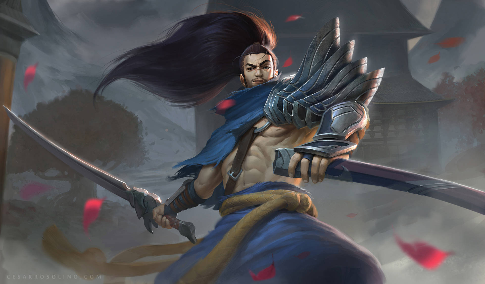
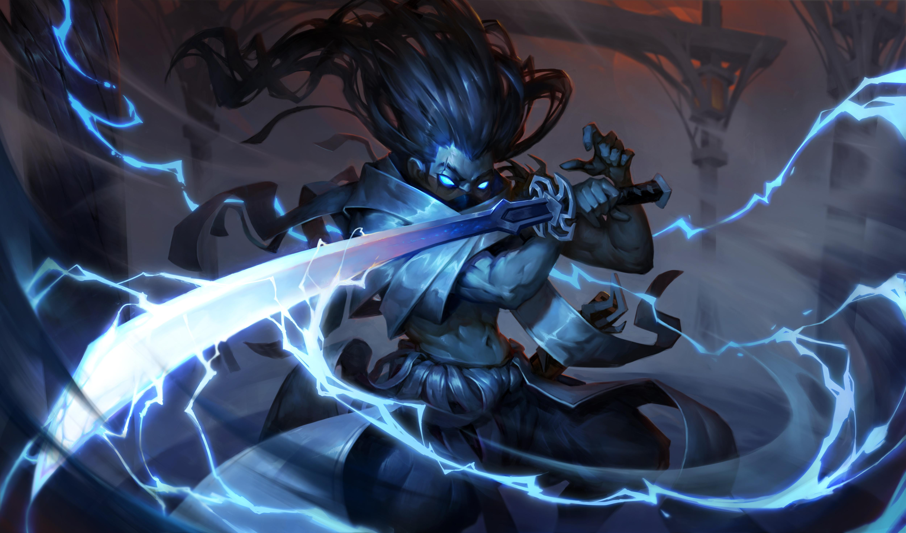
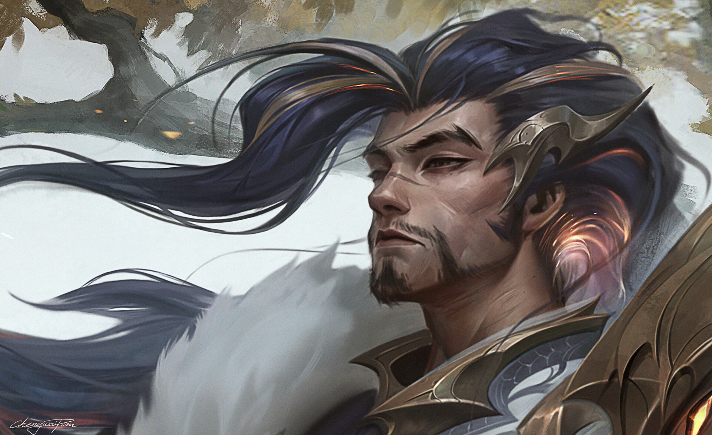
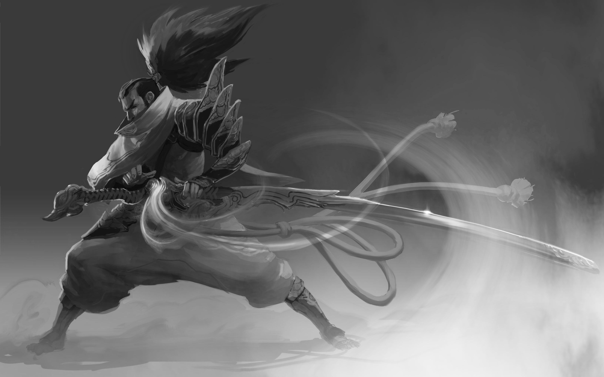
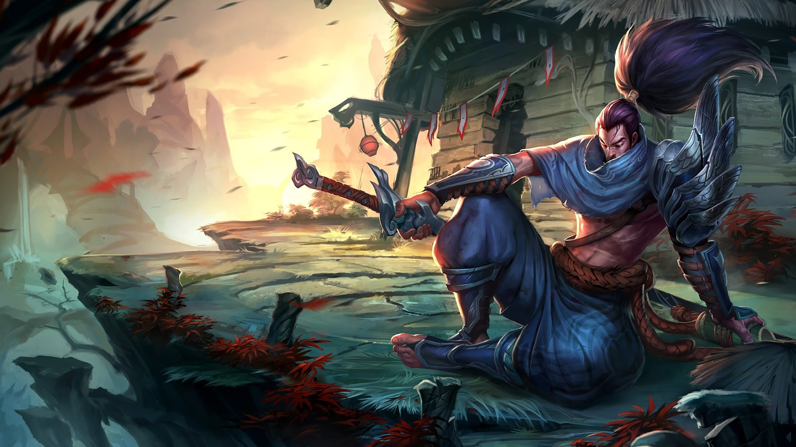

Historia
Yasuo es un personaje de League of Legends originario de la región de Ionia. Nació en un pueblo ioniano,
donde su padre llegó como un viento auténtico, dejando a su madre soltera. A lo largo de su vida,Yasuo ha enfrentado numerosos desafíos,
incluyendo la pérdida de su mentor y su propio hermano,lo que lo llevó a buscar la redención y la justicia en un mundo marcado por la guerra y la traición.
Su historia refleja la lucha entre la ambición y la Humildad.

Universo de League of legendsInformación sobre las Habilidades de Yasuo
- Intención: Aumenta la probabilidad de daño crítico y convierte el daño crítico adicional
- Resoluto: Genera un flujo de energía al moverse, que se convierte en un escudo cuando toma daño de un campeón o monstruo.
- Flujo: Al alcanzar 100 stacks, Yasuo puede consumirlos para obtener un escudo que protege contra daño.
- Destreza: Su daño crítico es significativo, y puede alcanzar hasta el 100% de la probabilidad de daño crítico con el complemento "Way of the Wanderer"
- Último Aliento Yasuo se teletransporta hacia un campeón enemigo que esté por los aires (lanzado por él mismo o por un aliado).
Momentos más importantes
- Duelo con Yone: Mata a su hermano en defensa propia tras ser acusado falsamente de traición; luego se reconcilian cuando Yone regresa como espíritu.
- Redención: Deja de ser un fugitivo solitario al unirse al equipo de Ruined King para enfrentar a Viego, encontrando un nuevo propósito.
- Leyenda del 0/10: Se convierte en el ícono cultural del juego por su capacidad de remontar partidas sin importar qué tan mal empiece.
Ficha técnica
| Categoría | Detalles |
|---|---|
| Alias | El Imperdonable |
| Edad | 30 - 35 años (aprox.) |
| Peso | 77 kg (aprox.) |
| Estatura | 1.80 m (aprox.) |
| Primera aparición | 13 de diciembre de 2013 |
| Debilidades | Control de masas (CC) y fragilidad |
Registro de Fans
Galería



